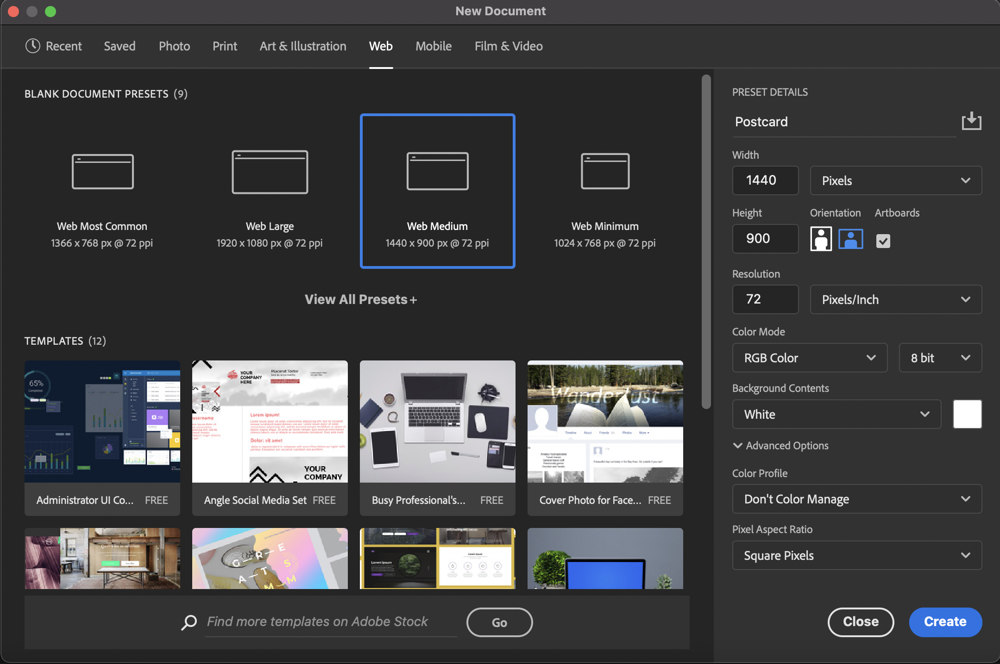

Photoshop 1
Introduction to Image Editing
Introduction
Adobe Photoshop, a part of the Adobe Creative suite, is a powerful image editing and manipulation program. Used worldwide by professional photographers and designers, Photoshop is considered industry standard.
About this Class
This class introduces the basic concepts and functions of Adobe Photoshop CC. By the end of this class, you will have worked with many of Photoshop's core features. This includes basic image adjustments, and content manipulation tools. We will also be using these skills to design and create a simple postcard, that can be used in print media and on the web.
Photoshop 1 is the first in a series of Photoshop classes and is intended to serve as an introduction to the program, and to the concept of digital image editing in general. In order to explore more advanced techniques, students should consider enrolling in Photoshop 2: Filters and Effects or Photoshop 2: Portrait Retouching.
Prerequisites and Requirements
Outcomes
After completing this manual, learners will know:
- The elements of the Photoshop interface including Tools, Panels, and Layers
- What Adjustment Layers are and why we use them
- What pixel dimensions and image resolution are
- The difference between RGB and CMYK color modes
and will be able to:
- Navigate the Photoshop interface
- Use the Crop and Straighten Image tools
- Resize images
- Add and adjust the following Adjustment Layers: Levels, Brightness/Contrast, Color Balance
- Use the History Panel to adjust multiple levels of Undo/Redo
- Use Blending modes
- Remove unwanted objects from an image
- Create and edit new documents
- Add and edit text with the Type tool
- Create seletions with the Quick Selection tool
- Save and export documents in a variety of formats.
Photoshop Interface
This section provides a brief overview of the Photoshop interface and describes its commonly-used components.
To open Photoshop, click the blue Photoshop icon in your computer's dock or taskbar. If you don't find it there, you may have to search your computer's installed applications to find it.
Interface Overview
The portion of the Photoshop interface that is used to view and edit documents is known as the workspace. A wide variety of windows, tools, and menus (known as panels) can be displayed within the workspace in order to provide quick access to the features needed for a given task.
Creating a New Document
-
Open the Photoshop application on your computer
-
Click Create New
-
In the New Document window, adjust the settings to those shown below and click Create

Interface Components
Photoshop's interface consists of five main areas, labeled below.

Application Bar
The Application Bar contains drop-down menus common to many applications, such as File, Edit, and View, as well as a few that are unique to Photoshop. These menus provide access to nearly all commands and options available in Photoshop. Some commands/options are duplicated within panels, but others are available only through the menu bar. It also contains the shortcut to Adobe Bridge and Adobe Stock.
Document Window
The document window displays the file that you are currently working on. If you have multiple files open, each file appears as a tab in the document window.
Tools Panel
The Tools Panel contains tools used to create and manipulate artwork (like a toolbox). To select a tool, simply click it. Tools with a triangle in the lower-right corner have additional tools hidden beneath them. To display hidden tools, click and hold a tool icon; a drop-down menu showing the hidden tools will appear.
Options Panel
The control panel displays options and features for the currently selected tool. Select different tools, and you'll notice the control panel changes for each one.Keep in mind that there may be additional options for your selected tool beyond those displayed in the Control Panel.
Panel Dock
Panels are menus that allow you to monitor and modify your image. On the left side of the panel dock, you'll see icons representing collapsed, or hidden panels. Select the icons to reveal these panels. The panel dock also contains separate sections, each containing multiple panels. Click and drag a panel's tab to reorder it, or to move it elsewhere on the screen or in the panel dock.
Photoshop Workspace
The Control Panel contains the Workspace Switcher menu. The Workspace Switcher menu can be used to arrange multiple windows. Depending on your project, there are a variety of window layout options that will suit your needs. Use the drop-down menu to choose one of the many available window layout options.
Under the same menu, you'll find an option that says "Reset Essentials". If you end up moving toolbars and panels around on your own and want to return to the Essentials layout, this button will always reset your workspace to its original layout.
Also under the same menu, you'll notice options for "New Workspace" and "Delete Workspace". Along with Photoshop's pre-defined workspaces, you can also build and save your own pre-defined workspaces. However, we will not be using this feature in this class.
Navigating the Workspace
Working in Photoshop often involves moving around the workspace in order to focus on different portions of your project. In this section, we discuss a few methods of navigating the workspace.
Zoom Tool
Zoom Tool:
The Zoom Tool lets you zoom in or zoom out to increase or decrease the document display size.
Quickly zoom with any tool by holding
Option/Alt and scrolling with the mouse/trackpad or by hitting Ctrl/Command and +/_.
Hand Tool

Hand Tool:
Used to move around the image when the document is zoomed in beyond the workspace.
Shortcut: Hold Spacebar while dragging with the mouse.
For laptop users with trackpads, you may be able to use a pinch-to-zoom gesture to zoom into your document. You may also be able to use two fingers to pan around your workspace when zoomed it. These gestures are common, but do not work on all laptops.
Resizing, Cropping, and History States
In this section, we will discuss basic image editing tasks, such as resizing and cropping. We will also learn how to "undo" our work in Photoshop using history states. Throughout this section we will focus on a concept called "non-destructive editing", which means making changes to images without affecting the original file.
Resizing Images
Every digital image is made up of pixels, and each digital image has specific dimensions regarding the number of pixels it contains. Often it is necessary to resize an image, either scaling it up, or scaling it down. We will learn to properly resize images using the image size menu.
Decreasing Image Size
In this exercise, we will learn to decrease the size of an image. Most images can be scaled down without a loss of quality.
- First we will open an existing image to resize. In the menu bar, choose Open then select machu_picchu.jpg
- Before making any changes to our image, we will save a copy, to avoid changing the original image.In the menu bar, choose File > Save As and save the document as a Photoshop (PSD) file.
-
In the menu bar, choose Image > Image Size. The window that opens shows the current size and resolution, along with a preview of any changes you make.
-
Before resizing an image, make sure that the chain lock next to the width and height fields is locked. This will constraint the proportions of the image so you will not distort it when resizing.
-
In the width field, type 900 and leave the units set to pixels. Because we have the width and height set to change proportionally, you'll notice the height of the image is updated automatically. Click OK to finish the resize.
-
Save you file by navigating to File > Save in the menu bar.
Increasing Image Size
Increasing the size of an image follows the exact same procedure, with one small caveat. When increasing the size of a digital image, we actually need to add pixels to the image that did not exist before. In most programs, increasing image size will cause it to look blurry or pixelated. However, Photoshop has a series of smart algorithms it can use to analyze the image, and add pixels without losing too much image quality.
-
In the menu bar, choose Image > Image Size. We will the same window as before.
-
In the width field, type 1000 and leave the units set to pixels. Because we have the width and height set to change proportionally, you'll notice the height of the image is updated automatically. Click OK to finish the resize.
-
Under the image resize menu, make sure "Resample" is checked, then select "Preserve Details".
Straightening Images
Another common Photoshop task is straightening. Photoshop CC includes a highly advanced cropping tool that allows you to non-destructively straighten your images.
Right now, you'll notice our image is slightly tilted. To fix it, we'll use the straightening feature within the crop tool.
-
In the tools panel, find and select the crop tool.
-
In the options bar, make sure that "Delete Cropped Pixels" is unchecked. This will hide cropped-out areas of our photo, instead of entirely deleting them. This way we can always revert our changes if we want to.
-
In the options bar, select the straighten tool. Your cursor should change into crosshairs.
-
Click and drag to create a line along a straight edge within your image, as shown in the example, then release the mouse button. Photoshop will automatically rotate your image so that your line is perfectly vertical or horizontal.
Cropping Images
Crop Tool
Use the Crop Tool to crop images.
Use the Control Panel to manually input the desired ratio for your image.
Shortcut: C
Using the crop tool, we can also remove portions of the image we don't want non-destructively.
-
Click and drag the edges of the crop rectangle so it only contains the portion of the image you wish to keep.
-
Adjust the image's position within by clicking and dragging inside the crop rectangle.
-
Once you are satisfied with your crop, click the check mark in the options bar, or press the enter key on your keyboard. Until you confirm the changes by clicking the check mark, all other Photoshop features are locked!
History States
Like many other software programs, Photoshop allows you to "undo" an undesired action using Edit > Undo in the menu bar. However, if you need to go back more than one step, you will quickly find yourself frustrated, as Photoshop's undo feature is severely limited.
Instead, Photoshop has a much more powerful and robust feature called history states. Every time you make a change to your image, Photoshop saves the current state of the image. We can view all the different history states saved by Photoshop in the history panel.
-
From the menu bar, navigate to Window > History. Here, you'll see a list of all changes made to your image.
-
Click an editing step to revert back to that history state. Click on a different editing step further down the list to return to a more recent state.
-
To completely delete a history state, click and drag the state to the trash can icon in the lower-right corner of the history panel.
The Layers Panel
The Layers Panel in Photoshop is probably one of the most important panels you will need to know when working on a project. It contains all the layers that you are working on.
What is a Layer?
A layer is simply one image stacked on top of another. They are like sheets of stacked acetate. You can see through the transparent areas of a layer to the layers below. You can use layers to perform tasks such as compositing multiple images, adding text to an image, or adding vector graphic shapes.
Create a New Layer
We can create a new layer and specify a name and the options by going to Layer >New >Layer

OR
- Choose “New Layer” from the Layers panel menu.
- Rename the layer “Machu Picchu” and then click OK.
- The new layer is automatically selected and appears in the panel above the layer that was last selected
Remember that the ordering of the layers will determine which layers are on top, and which are on bottom. For example, an image on the top layer will cover up anything beneath it.
Creating Adjustment Layers
There are two main ways to create adjustment layers, both of which you may use throughout this section. First, you can navigate to Layer > New Adjustment Layer in the menu bar.
The other method is to use the adjustments panel found in the panel dock. If you have difficulty finding it, go to Window > Adjustments.
Adjustment Layers

Adjustment Layers: Let you create non-destructive (meaning you can go back and change them later) adjustments to the appearance of an image.
These include things like Brightness/Contrast, Levels, Curves, Color Balance, Hue/Saturation and more.
Adjustment layers affect every layer that is lower than them in the Layers panel. If it is the very top layer, it affects every layer in the image. If it's the very bottom layer in the stack, it will not affect any other layers.
To make an Adjustment Layer affect only the layer directly beneath, right click the Adjustment Layer's name in the Layers panel and click Create Clipping Mask
Each icon on the adjustments panel represents a different adjustment layer that can be added. Hover over an icon to view its name, then click on an icon to add that adjustment layer.
Tone and Contrast Adjustments
Tone and contrast adjustments change the distribution of light and dark values (also known as tonal range) within an image. These types of adjustments can be used to compensate for poor lighting conditions, and to sharpen the appearance of objects in an image.
Levels
In this exercise, we will use the levels panel to make adjustments to the tonal range of an image.
-
First we will open an existing image to add adjustment layers. In the menu bar, choose Open then select llama.jpg.
-
From the menu bar, choose Layer > New Adjustment Layer > Levels.
-
In the new layer window, leave the settings as they are and click OK.
-
In the layers panel, make sure the new adjustment layer is selected. If the layers panel is visible, you can access it by going to Window > Layers in the menu bar.
Notice that a properties panel appears for this adjustment layer. The properties panel allows you to edit the settings for the layer you have selected.
The properties panel for our levels adjustment layer displays a histogram. This histogram shows a distribution of light levels across the entire image. The left side of the histogram shows the amount of dark area in a photo, meanwhile the right side shows the amount of light area in a photo.
The three triangular sliders right below the histogram allow us to increase/decrease the dark, mid, and light tones. You'll notice.
Experiment with these three sliders to see their effects on the image, then find a setting that works best for you. If you're stuck, try setting the black slider to 0, and the gray slider to 1.60.
Finally, when you're done adjusting your layer, you can preview the changes made by toggling the layer on an off. To toggle a layer, simply click the eyeball icon next to it in the layers panel.
Brightness and Contrast
In the same way you added the levels adjustment layer, you can add a brightness and contrast adjustment layer. You'll notice the properties panel looks different for this layer than for the levels layer. This is because the properties panel changes depending on which layer you have selected.
The two sliders here will adjust the brightness and contrast of the image accordingly. Feel free to experiment with them, however, it appears this image doesn't need much adjustment in terms of brightness and contrast.
Color Balance
The biggest flaw in our photo involves its color. The entire image has a heavy yellow tint, likely due to the intense stage lights used during the performance. Along with the unnatural yellow tint, the warm colors in the image drown out any cool colors. Luckily, we can fix this using our adjustment layers.
-
Create a new color balance adjustment layer.
-
In the layers panel, make sure the color balance adjustment layer is selected, then view the properties panel.
The properties panel contains a set of sliders that can be dragged left or right to change the amount of particular color in the photo. Note that the color balance must be adjusted separately for midtones, highlights, and shadows by changing the selection in the Tone dropdown menu.
-
Experiment with the set of sliders for midtones, highlights, and shadows.
A color cast can be reduced by increasing the amount of color directly opposite to the cast color on the sliders. In our case, this means increasing the amount of cool colors, while taking away from the amount of warm colors.
In these exercises, we were only to cover a few of the many adjustment layers possible. We highly recommending spending some time on your own exploring and practicing with other adjustment layers. The most commonly used are hue and saturation, vibrance, and exposure. Combined, adjustment layers prove to be a very powerful in getting the best results from your image.
For example, in the image we used as an example, we were able significantly improve it with only two quick adjustment layers. Of course, what looks good and what doesn't look good is entirely subjective, and decided by the photo editor.
Finally, it's important that you make your adjustments subtle. Often when presented with such a wide range of options, people tend to over-edit their photos. They key to making your photo look good, is by making it appear unedited. Keep you adjustments small, and your effects subtle.
Merging Layers
We can merge two adjacent layers by selecting the top item and then choosing Layer > Merge Layers.
Cleaning Up an Image
Selection Tools
Photoshop has a number of tools to help us make selections in order to draw and paint and mask objects and to make changes in isolated areas.
Marquee Tool
We can use the marquee tool simply by clicking and dragging over the area of our workspace that we want to select. To deselect the selection just hit command/Ctrl + D. This tool comes in handy when the selection we need is a simple geometric shape.
Lasso Tool
We can make more specific selections using the lasso tool to draw around your selection.
Quick Selection Tool
The quick selection tool creates a selection of pixels by looking for similar textures, tones, and patterns in an image. This makes it easy to select objects with clearly defined edges.
The Quick Selection tool also has an option called “Select Subject” which automatically selects the student.
Magic Wand
The Magic Wand tool makes selections of the pixels adjacent to it. It is usually used to make finer selections.
Removing the Background
- Open up the image llama.jpg
- Start by adding a new mask layer. To do this click on the mask layer button in the layers panel.
- In the Tools Panel, Click the Quick Selection Tool
- Choose the Select Subject option from the Options Panel.This makes our job easier as Photoshop automatically detects and selects the subject of the image.
- As the image we are working with has one llama, or "subject", we can deselect extra portions of the image that photoshop might think is the subject by using the deselct brush from the options panel.
- Once we have one character selected, right click on your selection and click on "Select Inverse" from the drop down menu that appears.
- Go back to the Tools Panel and select the Brush Tool.
Changing Brush Properties
Before we begin, it's important to know how to change the color, size, and style of our brush. Select the brush tool so that it is active. In the options bar, you'll notice a button that opens up the brush options panel.
Here you can find settings for the size of the brush (how big it appears on screen) and for the hardness of the brush (how soft or hard the edges of the brush are).
Below this is a series of options for the shape of your brush. Photoshop has many styles of brushes built in, however, you can also download thousands of brushes online, and even create your own.
We also need to know how to change the color of our brush. Near the bottom of the toolbar there are two small squares; the top square represents the foreground color, while the bottom square represents the background color.
By double-clicking on the front square, you will open a color picker. This will allow you to change the color of your brush.To remove the background from our image we will keep the foreground color black and the background color white.
- Begin painting on the image by clicking and dragging the mouse over the workspace. Paint until all of the selected area (the background) is covered.
Brush Tool
Removing a Subject
We can remove the subject of an image the using the same steps as removing the background of the image. However, Photoshop has some built in features that allow us to remove subjects with a click of a button.
- In the image of machu picchu, use the Quick Selection Tool and select the gaurd using the Select Subject option
- Go to Edit >Content-Aware Fill
- In the Preview box, click OK
- While, Photoshop does a pretty good job removing the subject we can go back and clean up the area using the Clone Stamp tool. To do this select the Clone Stamp tool from the Tool Box
- Select the are you want to clone by holding the Option key and using the curor to select your sampling area.
- Once you have your sampling area selected, start painting over the spots you want to touch up by clicking on the areas using your mouse.
Your final image should look something like this.
Creating a Postcard
For our final project, we will apply our skills to create a postcard from Machu Picchu. The final postcard should look like this!
Adding Elements
We are going to star by adding the student to the Machu Pichhu image.
- Navigate to the llama.jpg tab.
- Using the Move tool, click on the character and drag it to the machu_picchu.jpg tab.
- Release when the screeen switches to the Machu Picchu image.
- Postion the character in the image.
Adding Drop Shadows
To make our character seem more intigrated into the picture, we will add a drop shadow to it.
- In the layers panel, click on the layer style button. Make sure that the layer selcted is the one with the student.
- From the drop down menu select the "Drop Shadow" option.
- In the pop-up window, experiment with the shadow settings until you end up with a nice drop shadow behind the character. It's recommend that you begin by adjusting the opacity, spread, and size.
- When you are satisfied with your shadow effect, click OK.
Notice that the drop shadow also appears in the layers panel. You can show and hide the effect by selecting the eyeball icon next to it.
Almost every image can benefit from minor adjustments to tone, contrast, and color. These adjustments help compensate for inaccuracies (over/under exposure, etc) or less than ideal conditions (low light, bright sunlight, etc) at the time the image was captured.
Photoshop offers a wide variety of adjustment features and options. In this section we will discuss only the most basic adjustment techniques that are both simple and extremely useful. We will continue to focus on non-destructive editing techniques by making use of adjustment layers, which allow adjustments to be applied as editable overlays, rather than permanent changes to the image.
Type Tools
This section will introduce two powerful new tools, the brush tool and type tool.
We will be using this tool to add a title to our postcard.
Creating Type
For this exercise, we will be creating the text to use for the title of our final project.
-
Select the type tool from the toolbar, then click and drag a large text box across your image. Type the first few words of the title you would like to use for your final poster. For example purposes, the slogan we chose is "Hello from MACHU PICCHU".
Congratulations! You've just created your very first type in Photoshop. Your layers panel should now have a layer for your text box.
We now want to customize and position our text as much as possible before moving to the next steps.
-
While the type tool is active, click on a text box to begin editing it.
-
While the text box is active, you may use the handles on each corner and side to change its size. Adjust the size of the text box until it fits your text nicely.
-
Click and drag to select all the text inside the text box. While the text is selected, you can now edit its properties in the options bar. This includes the font, style, size, alignment, color, and much more. We will be using the following settings for our title.
The small colored square on the far right of the options bar refers to text color. To change the color of your text, make sure it is selected, the click on the square to bring up the color picker.
Before moving on to the next step, take some time to customize your text and make it your own.
-
Confirm the changes you made to your type by clicking the check mark in the options bar.
-
Now that your text has the right size and styling, we want move and position it properly within the workspace.
Select the move tool, then select the layer you would like to move in the layers panel. Now you can click and drag to move it within your workspace.
So far, our slogan looks like this:
Saving and Exporting
Congratulations! At this point, you should have a completed poster that looks somewhat like this:
Now that our poster is complete, we will want to save it for use in print and on the web. Right now, our poster is stored as a .psd file. This means it can only be opened and edited by Photoshop.
To save our image in a different format, go to File > Export > Export As in the menu bar. Near the bottom of the window that opens, you will find a drop-down list of formats you may use to save the image.
Most images are stored in a standard JPEG file format. When saved in this format, the image is compressed, and our poster can no longer be edited. The advantage of this format is a small file size. If you require a high-quality, uncompressed image, you can save your poster as a TIFF.
Other notable saving options include saving it as a PDF, (choose Photoshop PDF) or a PNG (portable networks graphic, good for the web.)
Next Steps
Congratulations on completing our Photoshop 1 curriculum! Photoshop is a very powerful program with many creative applications.
We encourage you to explore our other Photoshop courses, including Photoshop 2: Portrait Retouching and Photoshop 2: Filters and Effects. These classes build upon the material covered in this manual and introduce advanced retouching and image manipulation techniques.
In addition to Software Training for Students classes, a variety of online training options are available, including Lynda.com video tutorials. Lynda.com is a subscription resource available only to UW-Madison students/staff. You may access through the STS website at wisc.edu/sts.
Digital Image Glossary
Bit Depth
Bit depth specifies how much color information for each pixel in an image. The more bits of information per pixel, the more available colors and more accurate color representation.
For RGB (Red, Green, Blue) images, 24-bit color means that each color (or "channel") has 8-bits.
8 bits/channel x 3 channels = 24 bits.
Bitmap
Digital photographs are bitmap (also known as raster) graphics. This means they are composed of a matrix of pixels that each have color value assigned (sort of like a mosaic). Characteristics of bitmaps include:
-
Large file sizes
-
Does not scale well
-
Resolution dependent
Common bitmap file formats: TIFF, JPEG, GIF, PNG. Photoshop is specifically designed for editing bitmap files.
File Formats
Depending on the situation, you may find different file formats to suit your needs. Below is a list of commonly used file formats, and their purposes.
-
Photoshop Format (PSD): Default Photoshop file format and the only format that supports all Photoshop features. Use this format for saving your "working" files.
-
Tagged Image File Format (TIFF): Uncompressed format used to exchange files between applications and computer platforms. Supported by virtually all paint, image editing, and page layout applications. Good for saving your final project for printing.
-
Joint Photographic Experts Group (JPEG): Compressed format best for displaying photographs and gradients on the web.
-
Graphics Interchange Format (GIF): Compressed format best for displaying illustrative, flat color images on the web.
-
Portable Networks Graphic (PNG): Compressed format best for displaying illustrative, flat color images on the web.